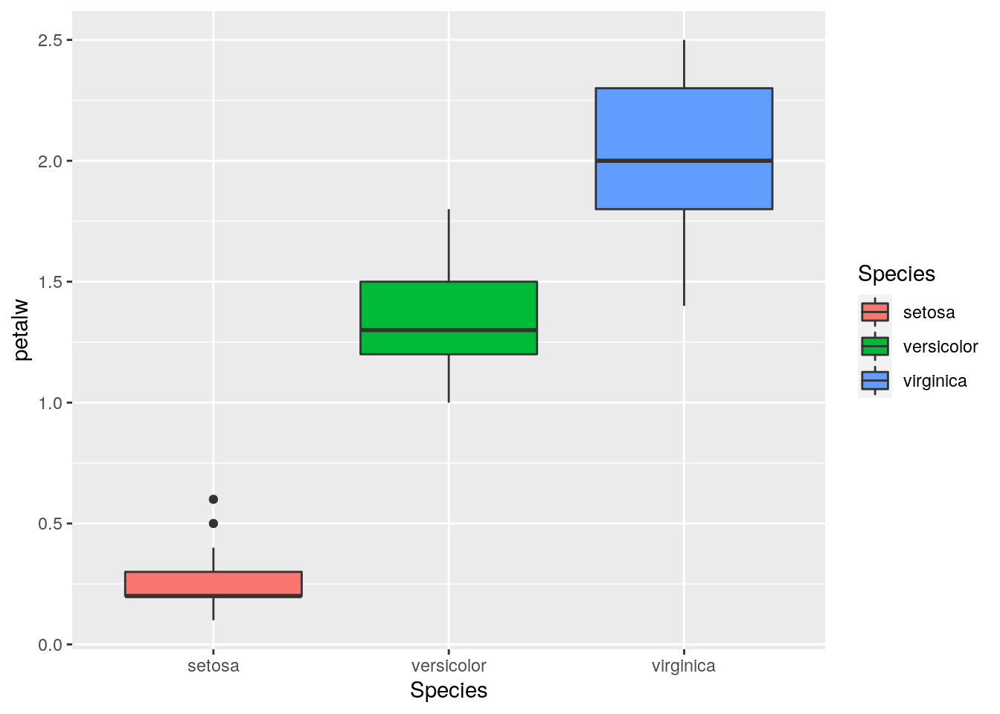

December 9, 2020
Throughout this semester in Computational Biology and Bioinformatics, we have been learning the ropes of basic coding in R and python. We have been using these skills to gain a better sense of how to wrangle/tidy data, how to visualize it to determine overall trends within the data, and how to best interperet these trends in a manner that serves to give us a better idea of the most relevant information to our probing questions or hypotheses.
Throughout the entire process, we have learned that developing coding skills in multiple languages allowes us to expand our bioinformatic repertiore and aids in our ability to problem sove using a wide variety of approaches.
I, myself, have been able to see quite a drastic improvement in my coding skills throughout this semester, because I have pushed myself to dive more deeply into bioinformatics, and challenged myself to code in bash, R, and python throughout the course of multiple computational projects I have worked on throughout the semester. I believe learning multiple languages really reenforces the basics you have learned in each, and challenges you to think more creatively about how to approach a particular problem.
One of the most useful things I have learned throughout this semester is how to use the reticulate package in R. This package allows for a sort of cross-talk between coding languages, so you are able to seamlessly switch between working with a dataset in R and in python. This type of package really serves to promote the interaction of the two languages within the context of a single project, because it allows you to be able to fully take advantage of the unique strengths of each language.
I have included a simple exmaple of this down below.
#First, we need to load in the packages we intend to utilize
library(reticulate)
library(ggplot2)
library(dplyr)##
## Attaching package: 'dplyr'## The following objects are masked from 'package:stats':
##
## filter, lag## The following objects are masked from 'package:base':
##
## intersect, setdiff, setequal, union#Then, we decide which dataset to use. Since R has many easily downloadable and publically available datasets, let's choose one of those.
iris <- iris
head(iris)## Sepal.Length Sepal.Width Petal.Length Petal.Width Species
## 1 5.1 3.5 1.4 0.2 setosa
## 2 4.9 3.0 1.4 0.2 setosa
## 3 4.7 3.2 1.3 0.2 setosa
## 4 4.6 3.1 1.5 0.2 setosa
## 5 5.0 3.6 1.4 0.2 setosa
## 6 5.4 3.9 1.7 0.4 setosa#Now, rename the columns so they are compatable in python
iris <- iris %>% rename(
sepall = Sepal.Length,
sepalw = Sepal.Width,
petall = Petal.Length,
petalw = Petal.Width
)
head(iris)## sepall sepalw petall petalw Species
## 1 5.1 3.5 1.4 0.2 setosa
## 2 4.9 3.0 1.4 0.2 setosa
## 3 4.7 3.2 1.3 0.2 setosa
## 4 4.6 3.1 1.5 0.2 setosa
## 5 5.0 3.6 1.4 0.2 setosa
## 6 5.4 3.9 1.7 0.4 setosa#Here, we are loading our data that came from R into python! Cool, right??
r.iris.head()## sepall sepalw petall petalw Species
## 0 5.1 3.5 1.4 0.2 setosa
## 1 4.9 3.0 1.4 0.2 setosa
## 2 4.7 3.2 1.3 0.2 setosa
## 3 4.6 3.1 1.5 0.2 setosa
## 4 5.0 3.6 1.4 0.2 setosa#We can see that both this command and the one in the R chunk above show us the first six observations of this dataset.
#Here, we can also see one of the fundamental differences between coding in R and in python: the value it indexes on. In the R command, we can see that the first observaiton is labeled "1", but in the python command, it is labeled as "0"
#Now, let's use python to get a better sense of the values in this dataset.
r.iris.describe()## sepall sepalw petall petalw
## count 150.000000 150.000000 150.000000 150.000000
## mean 5.843333 3.057333 3.758000 1.199333
## std 0.828066 0.435866 1.765298 0.762238
## min 4.300000 2.000000 1.000000 0.100000
## 25% 5.100000 2.800000 1.600000 0.300000
## 50% 5.800000 3.000000 4.350000 1.300000
## 75% 6.400000 3.300000 5.100000 1.800000
## max 7.900000 4.400000 6.900000 2.500000#However, if we want to use ggplot to make a boxplot, we can easily switch back to using R isntead of python.
iris %>% ggplot(aes(x = Species, y = petalw)) + geom_boxplot(aes(fill = Species))
#Here, we are looking at the distribution of petal widths across each species. So from this, we can easily see that using reticulate allows us to toggle back and forth with a single dataset and use two different languages for two different functions!
I am very very pleased with all that I have learned throughout this course, and I fully intend to continue developing the skills I have learned and applying them to my lab work in the future. Although the course is over, I am very proud of the work we as a class have accomplished, and am excited to have these new skills!